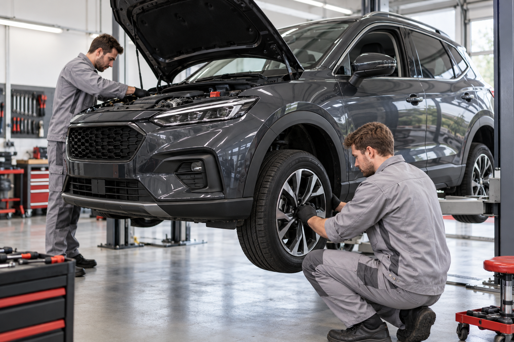

Werkstatt und Teileverkauf
Service, der Sie weiterbringt.
Von Wartung und Diagnose bis zu Rädern, Reifen und passenden Originalteilen.
Leistungen entdeckenUnser Werkstattteam begleitet Sie von der regelmäßigen Wartung bis zur Diagnose. Wir besprechen die Arbeiten verständlich und kümmern uns um Ihr Fahrzeug mit Erfahrung und Sorgfalt.
Regelmäßige Fahrzeugchecks nach Herstellervorgaben und mit Blick auf die anstehenden Wartungsintervalle.
Fehlersuche und Reparaturen mit moderner Diagnosetechnik – wir erklären Ihnen die nächsten Schritte vorab.
Räderwechsel, Prüfung und Beratung rund um passende Reifen und saisonale Einlagerung.
Wir bereiten Ihr Fahrzeug auf die Hauptuntersuchung vor und koordinieren die Prüfung.
Fragen Sie unser Team nach passenden Originalteilen und Zubehör für Ihr Fahrzeug.
Prüfung und Wartung für Klimaanlage und Fahrzeugbatterie – damit Sie verlässlich unterwegs sind.